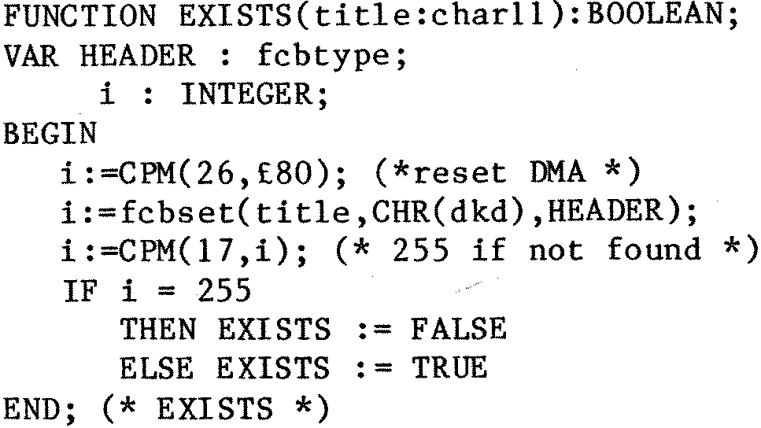
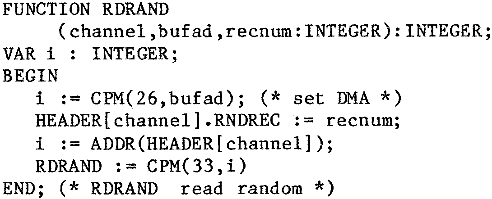

80-Bus News |
September–October 1984 · Volume 3 · Issue 5 |
| Page 5 of 47 |
|---|
definitions is simply an array of 128 bytes (or 64 integer numbers if you wish to use these or any other combination).
Having defined our FCB, there are a number of routines given in the CP/M manual which are of use apart from the obvious read random and write random. What of a function EXISTS which checks the existence of a file and returns a boolean value TRUE or FALSE ? Here it is –
Note that we use the default DMA area (hex 80 to FF ) to store the directory in as we read it, and the function used is number 17 which is search for first. Variable dkd is an integer giving the disk to be used 0=default 1=A 2=B etc. The function fcbset is used to copy the title and the disk number into the fcb area (called HEADER in this example), and also to set the extent,current record and overflow bytes to zero (ie CHR(0)). In my version of fcbset the function returns a value equal to the address of the fcb used but the value is ignored at present.
My versions of the random access routines (actually they are functions), use the fact that there is more than one fcb created, and calls this the channel number. The channel number is assigned by the programmer and all the function calls need this value (or else the wrong file would be used with unpredictable results). The routines are rather similar so I won’t list them all (anyway I am not getting paid for this by the inch, and I earn my living as a professional programmer so I would be silly giving all my ideas away!!).
Call the function with the channel number, the ADDRess of the buffer area to be used and the number of the record. The numbers are both integers as you see so this limits you to records in the range of 0 to 32767. As the max number of a record in a CP/M file is 65535 (ie 8 Megabytes) I leave it as an exercise to any user to work out a way of getting the top half of such a large file (or for a small fee..?). Since I have mentioned fees, for a small fee I might supply all these routines (and the ones which are not given here) on a disk, but this letter should have given enough ideas to get anyone going in the fascinating jungle of random-access files.
Yours sincerely, Godfrey Nix, __ ___________ ______, Nottingham.
| Page 5 of 47 |
|---|